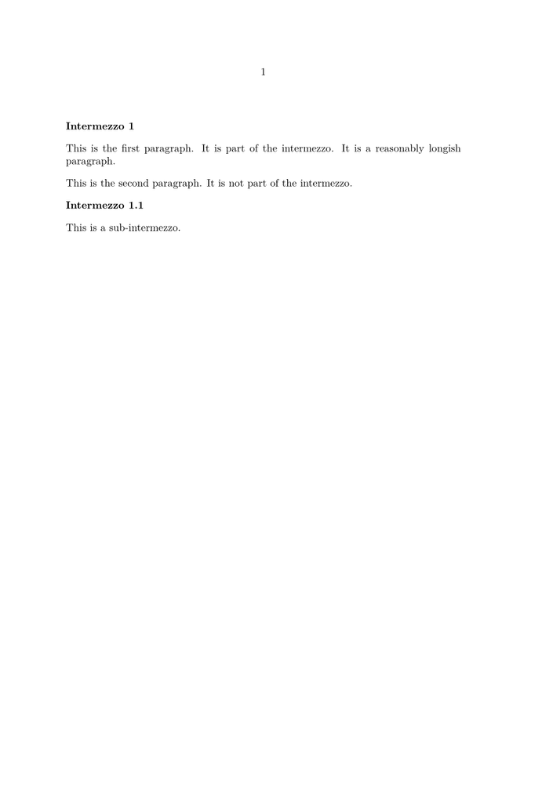

Syntax (autogenerated)
Syntax
| \enumeration... | |
| ... | text |
Description
The next paragraph is an item of type enumeration. The enumeration type is previously defined and set up using \defineenumeration and \setupenumerations. Enumerations have a wide variety of uses; remarks, questions and answers, and theorems are probably the most common ones. When an enumeration is defined, sub- and subsubenumerations are automatically available.
Example
-
% Define enumerated intermezzos \defineenumeration[intermz][text=Intermezzo, location=left] \starttext \intermz This is the first paragraph. It is part of the intermezzo. It is a reasonably longish paragraph. This is the second paragraph. It is not part of the intermezzo. \subintermz This is a sub-intermezzo. \stoptext
- 
See also
- \defineenumeration for creating new kinds of numbered objects.
- \setupenumerations for setting up looks and behaviour.
- \enumeration for single-paragraph numbered objects.
- \startenumeration for multiple-paragraph numbered objects.
- MAPS article on Theorems
Help from ConTeXt-Mailinglist/Forum
All issues with: